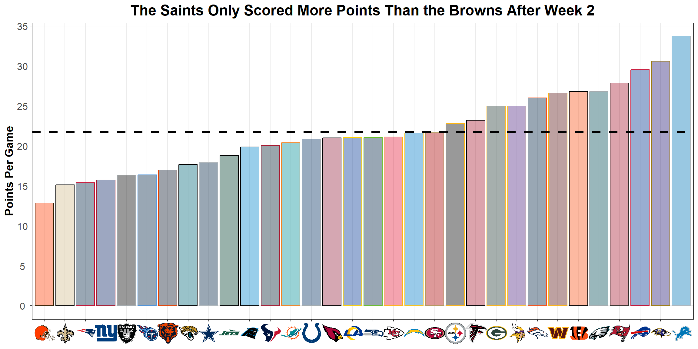
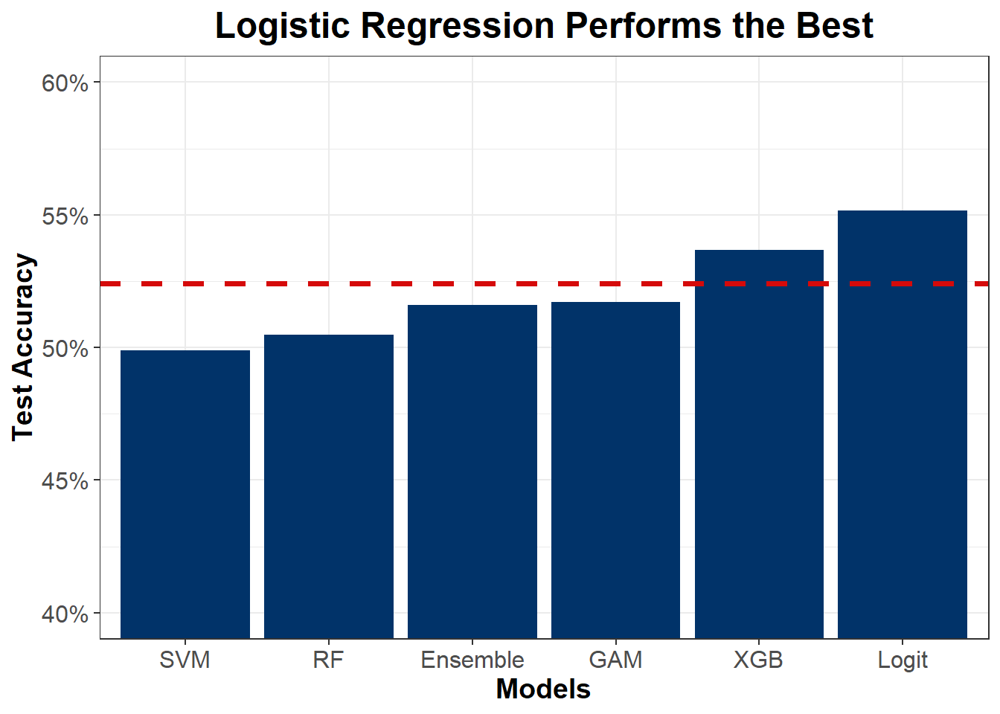
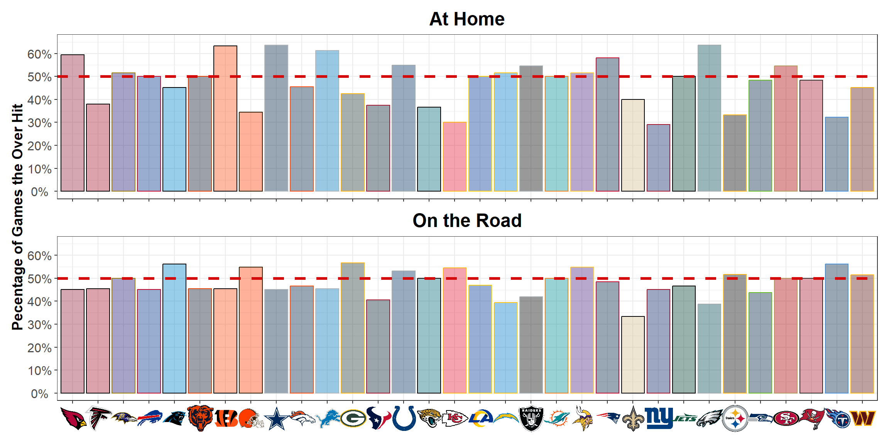

Read Between the Lines: Key Predictors of NFL Over/Under Outcomes
STAT 7100: Master’s Data Science Capstone
Author
Liam Jennings
Published
May 7, 2025
1 Introduction
After two weeks of the 2024 NFL season, NFL experts and fans could claim that the New Orleans Saints may be Super Bowl contenders. In week 1, they beat the lowly Carolina Panthers 47-10 in New Orleans. That win was not as significant until after week 2, when the Saints marched into AT&T Stadium in Dallas and thumped the Cowboys 44-19. The New Orleans Saints looked like a complete team. Their offense averaged 45.5 points per game while their defense held opponents to 14.5 points per game. They had a point differential of +62 after two weeks. The New Orleans Saints caught most NFL fans’ attention after their unexpected performances. Also, they caught the eye of sportsbooks. The Philadelphia Eagles were traveling to New Orleans to play the Saints. The Eagles were scoring 28 and allowing 25 points per game. Fans were excited to watch a high-scoring affair… while making a profit. The total over/under line, a bet on the total number of points scored in a game, was set at 49.
Code
# New Orleans Saints Hot Startgame_total_lines |>filter( season ==2024, home_team =="NO"| away_team =="NO" ) |>head(n =3) |># remove game IDselect(-game_id ) |># blank on week 3mutate(total_home_score =c("47", "19", ""),total_away_score =c("10", "44", ""),total_score =c("57", "63", ""),over =c("1", "1", "") ) |># gt tablegt() |># align columnscols_align(align ="center" ) |># label columnscols_label(season ="Season",home_team ="Home Team",away_team ="Away Team",week ="Week",total_home_score ="Home Score",total_away_score ="Away Score",total_score ="Total Score",total_line ="O/U Line",over ="Over", ) |># format numerical columnsfmt_number(columns =c( total_home_score, total_away_score, over ),decimals =0 ) |>fmt_number(columns =c( total_line ),decimals =1 ) |># title and subtitletab_header(title =md("**New Orleans Saints Hot Start**"),subtitle =md("*Data: nflreadr*") ) |># footnotetab_footnote(footnote =md("*Note: Over = 1, Under = 0*") ) |># themegt_theme_espn()
New Orleans Saints Hot Start
Data: nflreadr
Season
Home Team
Away Team
Week
Home Score
Away Score
O/U Line
Total Score
Over
2024
NO
CAR
1
47
10
41.5
57
1
2024
DAL
NO
2
19
44
47.0
63
1
2024
NO
PHI
3
49.0
Note: Over = 1, Under = 0
Sports bettors were overzealous to “take the over.” The Saints have been scoring nearly 49 themselves. Is sports betting really that easy? Can we really predict sports?
Code
# New Orleans Saints Hot Startgame_total_lines |>filter( season ==2024, home_team =="NO"| away_team =="NO" ) |>head(n =3) |># remove game IDselect(-game_id ) |># gt tablegt() |># align columnscols_align(align ="center" ) |># label columnscols_label(season ="Season",home_team ="Home Team",away_team ="Away Team",week ="Week",total_home_score ="Home Score",total_away_score ="Away Score",total_score ="Total Score",total_line ="O/U Line",over ="Over", ) |># format numerical columnsfmt_number(columns =c( total_home_score, total_away_score, over ),decimals =0 ) |>fmt_number(columns =c( total_line ),decimals =1 ) |># title and subtitletab_header(title =md("**New Orleans Saints Hot Start**"),subtitle =md("*Data: nflreadr*") ) |># footnotetab_footnote(footnote =md("*Note: Over = 1, Under = 0*") ) |># themegt_theme_espn()
New Orleans Saints Hot Start
Data: nflreadr
Season
Home Team
Away Team
Week
Home Score
Away Score
O/U Line
Total Score
Over
2024
NO
CAR
1
47
10
41.5
57
1
2024
DAL
NO
2
19
44
47.0
63
1
2024
NO
PHI
3
12
15
49.0
27
0
Note: Over = 1, Under = 0
Probably not. The Saints led 3-0 going into the fourth quarter. The promised shootout turned into a defensive slugfest that made bettors wonder, “How could this have happened?” The Eagles won the game 15-12 by scoring a touchdown with a minute left and forcing a Derek Carr interception. Some NFL fans assumed this was a blip and wondered if we could see a playoff rematch.
Code
offensive_metrics |>filter( week >=3, season ==2024 ) |># group by teamgroup_by( team ) |># points per game from weeks 3 - 18summarize(ppg =mean(points) ) |># plotggplot(aes(# x axisx =fct_reorder(team, ppg),# y axisy = ppg ) ) +# columngeom_col(aes(color = team, fill = team) ) +# scale fill valuescale_color_nfl(type ="secondary") +# scale fill opacityscale_fill_nfl(alpha =0.4) +# mean points scoredgeom_hline(# line at 50%yintercept = offensive_metrics |>filter( week >=3, season ==2024 ) |># group by teamgroup_by( team ) |># points per game from weeks 3 - 18summarize(ppg =mean(points) ) |>pull(ppg) |>mean(),# colorcolor ="black",# dashed linelinetype ="dashed",# sizelinewidth =1.25 ) +# scale y axisscale_y_continuous(# breaksbreaks =seq(0, 35, 5) ) +# labelslabs(y ="Points Per Game",title ="The Saints Only Scored More Points Than the Browns After Week 2" ) +# custom themenfl_bar_theme()

The New Orleans Saints struggled with injuries and underperformance for the rest of the year. They only scored more points than the quarterback-depleted Cleveland Browns after week 2. This is to show that sports are not predictable, and anything can happen.
2 Research Question
Knowing how difficult is to predict sports, my goal for this project is to identify the most significant factors influencing the total over/under line of NFL games. The total over/under line represents a bet on the total number of points scored in a game. If a gambler wagers that the actual points scored will exceed the line, they bet the “over.” If the teams score more than the line, the gambler wins the bet. Conversely, if the teams score less than the line, the gambler loses the bet. The process operates similarly for those who wager that the actual points scored will be less than the line or the “under.” If the teams’ combined score equals the line, the bet is tied, and no money is exchanged. My target accuracy goal is 52.4% because sports gamblers must win or cover bets at least 52.4% of the time to be profitable. I am treating the over/under as a classification task because I am not trying to see what impacts the total line.
3 Literature Review
Most literature on NFL betting focuses on the point spread as the primary wager of interest. The spread represents the number of points by which one team, the favorite, is favored over the opponent, the underdog. However, some articles discuss the total over/under line.
The first article is the Factors Affecting Scoring in NFL Games and Beating the Over/Under Line by C. Barry Pfitzner, Steven D. Lang, and Tracy D. Rishel (2014). They attempt to predict the total points scored in NFL games for the 2010-11 season. They fit separate regression equations to predict the total number of points scored for the home and away teams based on information known before the game. Then, the sum of the predictions is compared to the over/under line to determine if a successful betting strategy can be identified. The variables they used include: total points scored, offensive yards, defensive yards (yards allowed by the defense), giveaways (offensive turnovers), takeaways (defensive forced turnovers), inside or outside, and points scored by a team in the previous game. Also, they created additive variables for yards and turnovers to quantify the matchup. Their regression model successfully produced a winning percentage of 55.4% for all games.
Sebastian Juuri (2023) used machine learning to predict the outcomes of NFL games, and determined which statistics and in-game events weigh most heavily on the outcomes. In Predicting the Results of NFL Games Using Machine Learning, Juuri used Pro Football Focus data as his predictors. He used logistic regression, random forest, and support vector machines as his classification models. All of his models were at least 85% accurate.
4 Data Sources
I obtained my data from the nflreadr library in R, which contains play-by-play data. I used the 2021 to 2024 seasons to train and test my models. I aggregated the play-by-play data so each observation was a game with home and away teams, their statistics, and whether or not the over hit, which is a binary 0 or 1 variable. The metrics are the average of the previous weeks going into the matchup. The first factors I included were offensive variables for each team. The variables include: average total yards, points per game, possessions per game, pass rate over expected (PROE), expected points added (EPA), giveaways per game, and average time of drive (in seconds). I included possession-related statistics because teams that have the ball more have more opportunities to score. Similarly, teams that score faster will most likely have more opportunities to score. PROE is how much above or below expectations an offense calls a passing play. For example, in the Saints-Panthers game, the Panthers were down a lot of points. They are expected to pass the ball on 1st and 10 on a new drive. If they run the ball, that results in a negative PROE. Each play in the nflreadr play-by-play data has a variable called xpass, which is the probability that the play will be a pass. PROE is the difference between pass (a binary variable of 0 or 1) and the expected pass. Expected points (EP) is the number of points teams scored in similar situations. Expected points added (EPA) is the difference between ending expected points and starting expected points for a play. If a team scores a 70-yard touchdown on 1st and 10, the EPA would be very high because that does not happen often. The defensive metrics are the same as the offensive metrics, except they are what the defense allows. Instead of total yards, the defensive equivalent is total yards allowed. Also, I considered independent factors such as temperature (in Fahrenheit), wind (in mph), indoors or outdoors, and the hour time difference between the home and away teams. For example, if the Pittsburgh Steelers went to Los Angeles to play the Rams, that is a three-hour time difference. I suspected that jet lag and other long-distance traveling may influence a team’s ability to perform well.
Code
## data for the modelsnfl_model_data |># select columnsselect( season, home_team, away_team, week, over, avg_total_yards_home_team, avg_total_yards_allowed_ma4_away_team, net_ppg, net_offensive_yards_ma4 ) |># slice headslice_head(n =17 ) |># gt tablegt() |># align columnscols_align(align ="center" ) |># label columnscols_label(season ="Season",home_team ="Home Team",away_team ="Away Team",week ="Week",over ="Over",avg_total_yards_home_team =md("Home Team:<br>Avg Total Yards"),avg_total_yards_allowed_ma4_away_team =md("Away Team:<br>MA of Avg Total Yards Allowed"),net_ppg ="Matchup Strength Points Per Game",net_offensive_yards_ma4 ="MA of Matchup Strength Offensive Yards" ) |># format numerical columnsfmt_number(columns =c( avg_total_yards_home_team, avg_total_yards_allowed_ma4_away_team, net_ppg, net_offensive_yards_ma4 ),decimals =2 ) |># disable row stripingopt_row_striping(FALSE) |># add colordata_color(# columnscolumns =c( avg_total_yards_home_team, net_ppg, net_offensive_yards_ma4 ),# scalefn = scales::col_numeric(palette =c("dodgerblue4", "white", "goldenrod"), domain =NULL ) ) |># this needs to be in reverse since it is a defensive statistic (lower = better)data_color(# columnscolumns =c( avg_total_yards_allowed_ma4_away_team ),# scalefn = scales::col_numeric(palette =c("goldenrod", "white", "dodgerblue4"), domain =NULL ) ) |># title and subtitletab_header(title =md("**NFL Game-by-Game Stats**"),subtitle =md("*Data: nflreadr*") ) |># footnotetab_footnote(footnote =md("*Note: Over = 1, Under = 0*") ) |># themegt_theme_espn() |># force numerical columns text to be blacktab_style(style =cell_text(color ="black"),locations =cells_body(columns =where(is.numeric)) ) |># disable Quarto table processingtab_options(quarto.disable_processing =TRUE)
NFL Game-by-Game Stats
Data: nflreadr
Season
Home Team
Away Team
Week
Over
Home Team: Avg Total Yards
Away Team: MA of Avg Total Yards Allowed
Matchup Strength Points Per Game
MA of Matchup Strength Offensive Yards
2021
KC
BUF
5
1
427.50
238.85
24.25
170.77
2021
LV
CHI
5
0
406.50
351.10
2.00
105.52
2021
LAC
CLE
5
1
391.00
311.35
4.75
95.06
2021
PIT
DEN
5
1
301.75
263.73
7.50
24.67
2021
MIN
DET
5
0
382.50
397.44
−5.50
7.94
2021
CIN
GB
5
0
325.50
321.96
−3.50
1.17
2021
BAL
IND
5
1
420.00
365.27
3.00
58.27
2021
SEA
LA
5
0
350.25
357.69
2.75
19.62
2021
TB
MIA
5
1
399.75
384.02
1.50
21.67
2021
HOU
NE
5
1
263.25
286.46
−0.75
64.15
2021
WAS
NO
5
1
342.00
297.06
5.50
16.10
2021
DAL
NYG
5
1
420.75
397.46
8.50
33.40
2021
CAR
PHI
5
0
387.50
303.15
−4.00
82.06
2021
ARI
SF
5
0
440.50
378.90
12.25
54.56
2021
JAX
TEN
5
1
321.50
385.02
−11.75
−54.15
2021
CLE
ARI
6
1
417.60
346.70
11.40
59.01
2021
TEN
BUF
6
1
389.20
238.80
13.20
150.29
Note: Over = 1, Under = 0
The table above shows examples of four different categories of variables: non-transformed (e.g., “Home Team: Avg Total Yards”), moving average (e.g., “Away Team: MA of Avg Total Yards Allowed”), matchup strength (e.g., “Matchup Strength Points Per Game”), and moving average of matchup strength (e.g., “MA of Matchup Strength Offensive Yards”). The moving average statistics are an average of the previous four weeks to account for performance changes throughout the season. This is an extension of Pfitzner et al.’s (2014) previous game statistics. The matchup strength is the difference between the home and away teams. For example, matchup strength points per game is the home offense points per game minus the away defense points per game allowed. The more positive the number is, the stronger each teams’ side of the ball is. The first game on the table is the Kansas City Chiefs against the Buffalo Bills. The matchup strength points per game is a high positive number, which means the Chiefs’ offense is scoring a lot, and the Bills’ defense is preventing their opponents from scoring. The more negative the number is, the weaker each teams’ side of the ball is. It indicates that neither team is good. The closer to zero means there is a mismatch between the teams. The matchup strength is subtractive instead of additive compared to Pfitzner et al. (2014), but accomplishes the same goal of quantifying how the two teams compare. I only used data after week four for each season because, as mentioned earlier in the New Orleans Saints example, a decent sample size is needed.
5 Modeling
Since the over/under variable is binary, I used classification models. I utilized logistic regression, random forest, XGBoost, general additive model (GAM), support vector machine, and a voting classifier. All the modeling techniques can handle nonlinear data, and the decision tree-based methods can capture complex relationships that others may not be able to. Additionally, I created a hard voting classifier, where all five models predict whether the over or under will hit, and the majority classification is the predicted class. Variable selection was determined using EDA and subjective judgment. The models that performed the best were put into the voting classifier. All models were trained on 10-fold cross-validation.
Code
tibble(model =c("Logit","RF","XGB","GAM","SVM","Ensemble" ),accuracy =c(accuracy(nfl_model_data$over, all_model_preds[,1]),accuracy(nfl_model_data$over, all_model_preds[,2]),accuracy(nfl_model_data$over, all_model_preds[,3]),accuracy(nfl_model_data$over, all_model_preds[,4]),accuracy(nfl_model_data$over, all_model_preds[,5]),0.5159 )) |>ggplot(aes(x =fct_reorder(model, accuracy),y = accuracy ) ) +# columnsgeom_col(fill ="#013369" ) +# line at 53%geom_hline(# line at 53%yintercept =0.524,# colorcolor ="#D50A0A",# dashed linelinetype ="dashed",# sizelinewidth =1.25 ) +# scale y axisscale_y_continuous(# convert to a percentagelabels = scales::percent_format(accuracy =1) ) +# change plot zoomcoord_cartesian(ylim =c(0.40, 0.60)) +# labelslabs(x ="Models",y ="Test Accuracy",title ="Logistic Regression Performs the Best" ) +# custom themenfl_plot_theme()

The red dashed line indicates the test accuracy goal of 52.4%, which is the target gamblers aim for to achieve profitability. The only two models that reached this goal were logistic regression, at approximately 55%, and XGBoost, at around 53.5%.
The logistic regression model performed the best with a test accuracy of about 55%. The only two variables were interaction terms that quantify how the home team’s offense matches up against the away team’s defense and vice versa.
Code
## variables tablelogit_nfl_model |> broom::tidy() |># mutatemutate(pred =c("Intercept","Home Team Avg Total Yards MA * Away Team Avg Total Yards Allowed MA","Away Team Avg Total Yards MA * Home Team Avg Total Yards Allowed MA" ) ) |>select( pred, estimate, std.error, statistic, p.value ) |># gt tablegt() |># align columnscols_align(columns =c(pred),align ="left" ) |># label columnscols_label(pred ="Predictors",estimate ="Slope",std.error ="Std Error",statistic ="t-value",p.value ="p-value" ) |># round for scientific notationfmt_scientific(columns =c( estimate, std.error ) ) |># round 3 decimals for t and p valuesfmt_number(columns =c( statistic, p.value ),decimals =3 ) |># title and subtitletab_header(title =md("**Logistic Regression Model Predictors**")#,#subtitle = md("*Best Model: Logistic Regression*") ) |># footnotetab_footnote(footnote =md("*Note: MA = Moving Average (4 weeks)*") ) |># themegt_theme_espn()
Logistic Regression Model Predictors
Predictors
Slope
Std Error
t-value
p-value
Intercept
1.59
6.04 × 10−1
2.625
0.009
Home Team Avg Total Yards MA * Away Team Avg Total Yards Allowed MA
−9.78 × 10−6
3.63 × 10−6
−2.694
0.007
Away Team Avg Total Yards MA * Home Team Avg Total Yards Allowed MA
−4.54 × 10−6
3.56 × 10−6
−1.275
0.202
Note: MA = Moving Average (4 weeks)
The above table shows the coefficients in terms of log-odds. Holding all other variables constant, each one unit increase in Home Team Avg Total Yards MA * Away Team Avg Total Yards Allowed MA, the log odds of the over hitting decrease by −0.00000977. Holding all other variables constant, each one unit increase in Away Team Avg Total Yards MA * Home Team Avg Total Yards Allowed MA, the log odds of the over hitting decrease by −0.00000454. Both appear to be small amounts; however, the variables are multiplicative and have a large scale. The first variable is significant at a significance level of 0.05 with a t-value of -2.692 and a p-value of 0.007. The second variable is not statistically significant; however, it remained in the model due to its relationship with the first variable.
The XGBoost model performed the second best. The predictors in the model were Matchup Strength Takeaways MA, Matchup Strength Giveaways MA, Matchup Strength Opposing PROE MA, Matchup Strength PROE MA, Matchup Strength Offensive Possessions, and Matchup Strength EPA MA.
XGBoost is an efficient and flexible decision tree-based method. Compared to random forests, it requires more work to tune properly. Since it is in the decision tree family, it has a variable importance feature. The XGBoost variable importance plot reveals that holding onto the ball is very important. A team that forces turnovers and doesn’t turn over the ball is likely to score more, which increases the chances of the over hitting. The opposite can be said for a team that can not hold on to the ball or force turnovers.
Both models reveal two key points to consider when determining the over/under. The first is that matchup strength is very important. The most important variables in the logistic regression and XGBoost models are quantifying how two teams will play against each other. One team’s performance is not significant enough to outweigh how an opponent will match up with them. The second key point is that recent performance is more indicative than whole-season trends. The NFL season is long enough for a team’s performance to fluctuate. Some teams get hot (or cold) at the right times. For example, after two weeks, the 2024 New Orleans Saints appeared to be a force to be reckoned with in the NFC. Another example is the 2020 Pittsburgh Steelers, who started with an 11-0 record before losing 5 of 6, including a loss to the Cleveland Browns in the first round of the playoffs. The logistic regression and XGBoost models show that holding onto the ball, matchup strength, and recent performance are indicators of the over/under.
6 Discussion
Using classification methods, including logistic regression and XGBoost, I identified the variables that are important in determining the over/under. The logistic regression and XGBoost models indicate that holding onto the ball, matchup strength, and recent performance are predictors of the over/under. As mentioned earlier, teams that limit offensive turnovers and force turnovers on defense increase the number of possessions and possible scoring opportunities. Teams that can not hold onto the ball or force turnovers lose precious opportunities to put up points on the board. Additionally, how a team stacks up against their opponent is key to outcome of the game. A pass-heavy team can be stopped in their tracks by one of the best secondaries in the league, which can derail an entire offensive gameplan. Finally, a team’s recent performance highlights trends that may not be seen through total season stats. For example, The 2023 Tampa Bay Buccaneers were 4-7 before a 6-1 stretch highlighted by a Wild Card 32-9 win over the Philadelphia Eagles. Over those last seven games, the offense scored 26.9 points per game compared to the 17.5 points per game over the first eleven games.
Significant feature engineering was required to quantify the complexities of an NFL game; however, there are still some limitations with these models. The most important factor that was not accounted for is the individual team impact. Every team in the NFL has different coaches and schemes.
Code
## over by home teamhome_team_over <- nfl_team_week_data |># group by home teamgroup_by(home_team) |>summarize(over_prop =sum(over) /n() ) |># plotggplot(aes(# x axisx = home_team,# y axisy = over_prop ) ) +# columngeom_col(aes(color = home_team, fill = home_team) ) +# scale fill valuescale_color_nfl(type ="secondary") +# scale fill opacityscale_fill_nfl(alpha =0.4) +# line at 50%geom_hline(# line at 50%yintercept =0.50,# colorcolor ="#D50A0A",# dashed linelinetype ="dashed",# sizelinewidth =1.25 ) +# scale y axisscale_y_continuous(# breaksbreaks =seq(0, 0.60, 0.10),# limitslimits =c(0, 0.65),# convert to a percentagelabels = scales::percent_format(accuracy =1) ) +# labelslabs(y ="Pecentage of Games the Over Hit",title ="At Home" ) +# custom themenfl_bar_theme() +# remove x axistheme(axis.text.x =element_blank() )## over by away teamaway_team_over <- nfl_team_week_data |># group by home teamgroup_by(away_team) |>summarize(over_prop =sum(over) /n() ) |># plotggplot(aes(# x axisx = away_team,# y axisy = over_prop ) ) +# columngeom_col(aes(color = away_team, fill = away_team) ) +# scale fill valuescale_color_nfl(type ="secondary") +# scale fill opacityscale_fill_nfl(alpha =0.4) +# line at 50%geom_hline(# line at 50%yintercept =0.50,# colorcolor ="#D50A0A",# dashed linelinetype ="dashed",# sizelinewidth =1.25 ) +# scale y axisscale_y_continuous(# breaksbreaks =seq(0, 0.60, 0.10),# limitslimits =c(0, 0.65),# convert to a percentagelabels = scales::percent_format(accuracy =1) ) +# labelslabs(y ="Pecentage of Games the Over Hit",title ="On the Road" ) +# custom themenfl_bar_theme()## combine the two plotshome_team_over / away_team_over +plot_layout(axes ="collect")

Mike Tomlin is an old-school coach. He wants an offense that relies on the run game, contrary to the modern NFL, and a defense that will make it tough to score. This style leads to low-scoring games, as seen with the Pittsburgh Steelers hitting the over about 30% of the time at home. Zac Taylor, the head coach of the Cincinnati Bengals, lets quarterback Joe Burrow dominate the opposing defense; however, their soft defense allows a lot of points. That combination leads to the over hitting 60% of the time at home for the Bengals. A way to factor in each team’s play style is to utilize hierarchical modeling. Hierarchical modeling accounts for each team and leverages all teams’ performance to provide a better estimate of an individual team. Another thing that is difficult to quantify is the impact of injuries. The moving average variables attempt to account for that, but do injuries are not directly quantified. If a team with the best running back in the NFL lost that running back to injury, their moving average of total yards should decrease. The variables show that the performance differs. However, it does not quantify the impact of losing that player.
7 References
C. Barry Pfitzner, Steven D. Lang, and Tracy D. Rishel (2014, February 14). Factors Affecting Scoring in NFL Games and Beating the Over/Under Line. The Sport Journal. https://thesportjournal.org/article/factors-affecting-scoring-in-nfl-games-and-beating-the-overunder-line/
Juuri, S. (2023). PREDICTING THE RESULTS OF NFL GAMES USING MACHINE LEARNING. https://aaltodoc.aalto.fi/server/api/core/bitstreams/80b6e0d0-f5d1-4c19-abd3-667ee40d9c93/content